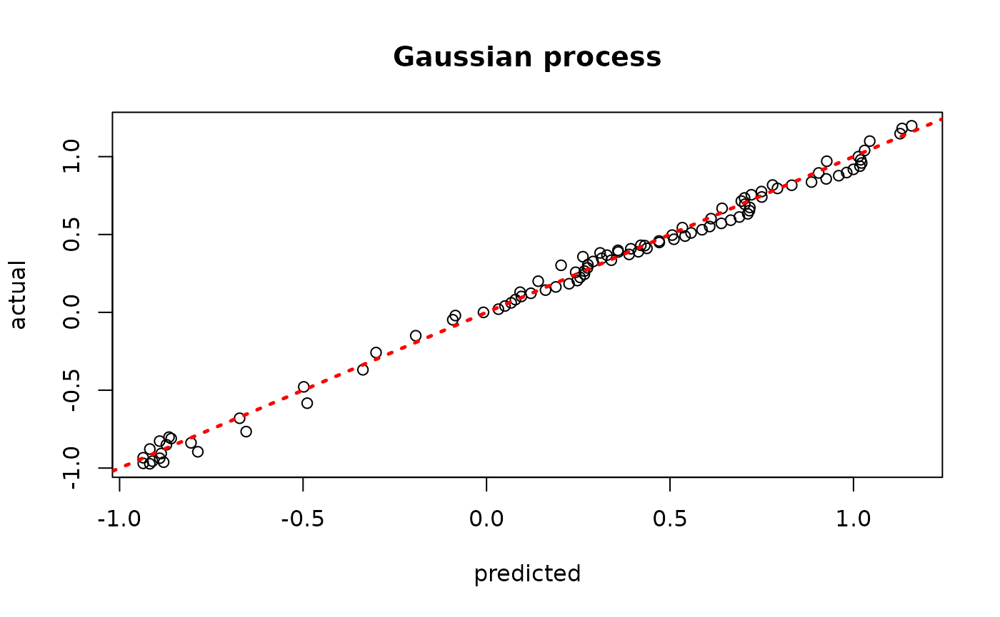
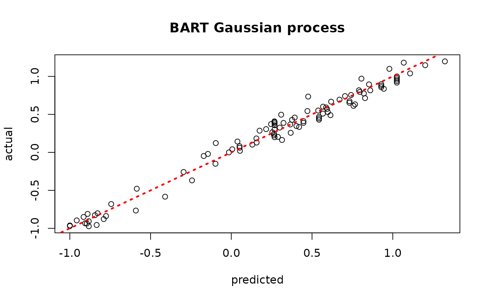
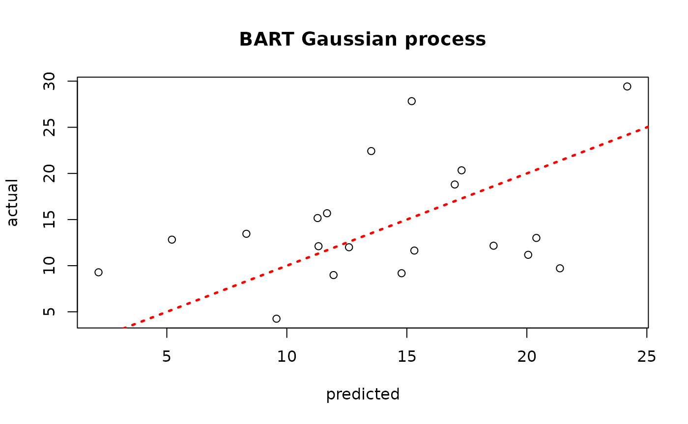

Kernel Methods from Tree Ensembles in StochTree
EnsembleKernel.RmdMotivation
A trained tree ensemble with strong out-of-sample performance admits a natural motivation for the “distance” between two samples: shared leaf membership. We number the leaves in an ensemble from 1 to \(s\) (that is, if tree 1 has 3 leaves, it reserves the numbers 1 - 3, and in turn if tree 2 has 5 leaves, it reserves the numbers 4 - 8 to label its leaves, and so on). For a dataset with \(n\) observations, we construct the matrix \(W\) as follows:
Let
s = 0FOR \(j\) IN \(\left\{1,\dots,m\right\}\):
Let
num_leaves be the number of leaves in tree \(j\)FOR \(i\) IN \(\left\{1,\dots,n\right\}\):
Let
k be the leaf to which tree \(j\) maps observation \(i\)Set element \(W_{i,k+s} = 1\)
Let
s = s + num_leaves
This sparse matrix \(W\) is a matrix representation of the basis predictions of an ensemble (i.e. integrating out the leaf parameters and just analyzing the leaf indices). For an ensemble with \(m\) trees, we can determine the proportion of trees that map each observation to the same leaf by computing \(W W^T / m\). This can form the basis for a kernel function used in a Gaussian process regression, as we demonstrate below.
To begin, load the stochtree package and the
tgp package which will serve as a point of reference.
Demo 1: Univariate Supervised Learning
We begin with a simulated example from the tgp package
(Gramacy and Taddy (2010)). This data
generating process (DGP) is non-stationary with a single numeric
covariate. We define a training set and test set and evaluate various
approaches to modeling the out of sample outcome data.
Traditional Gaussian Process
We can use the tgp package to model this data with a
classical Gaussian Process.
# Generate the data
X_train <- seq(0,20,length=100)
X_test <- seq(0,20,length=99)
y_train <- (sin(pi*X_train/5) + 0.2*cos(4*pi*X_train/5)) * (X_train <= 9.6)
lin_train <- X_train>9.6;
y_train[lin_train] <- -1 + X_train[lin_train]/10
y_train <- y_train + rnorm(length(y_train), sd=0.1)
y_test <- (sin(pi*X_test/5) + 0.2*cos(4*pi*X_test/5)) * (X_test <= 9.6)
lin_test <- X_test>9.6;
y_test[lin_test] <- -1 + X_test[lin_test]/10
# Fit the GP
model_gp <- bgp(X=X_train, Z=y_train, XX=X_test)
plot(model_gp$ZZ.mean, y_test, xlab = "predicted", ylab = "actual", main = "Gaussian process")
abline(0,1,lwd=2.5,lty=3,col="red")
Assess the RMSE
BART-based Gaussian process
# Run BART on the data
num_trees <- 200
sigma_leaf <- 1/num_trees
bart_model <- bart(X_train=X_train, y_train=y_train, X_test=X_test, num_trees=num_trees)
# Extract kernels needed for kriging
result_kernels <- computeForestKernels(bart_model=bart_model, X_train=X_train, X_test=X_test)
Sigma_11 <- result_kernels$kernel_test
Sigma_12 <- result_kernels$kernel_test_train
Sigma_22 <- result_kernels$kernel_train
Sigma_22_inv <- ginv(Sigma_22)
Sigma_21 <- t(Sigma_12)
# Compute mean and covariance for the test set posterior
mu_tilde <- Sigma_12 %*% Sigma_22_inv %*% y_train
Sigma_tilde <- (sigma_leaf)*(Sigma_11 - Sigma_12 %*% Sigma_22_inv %*% Sigma_21)
# Sample from f(X_test) | X_test, X_train, f(X_train)
gp_samples <- mvtnorm::rmvnorm(1000, mean = mu_tilde, sigma = Sigma_tilde)
# Compute posterior mean predictions for f(X_test)
yhat_mean_test <- colMeans(gp_samples)
plot(yhat_mean_test, y_test, xlab = "predicted", ylab = "actual", main = "BART Gaussian process")
abline(0,1,lwd=2.5,lty=3,col="red")
Assess the RMSE
Demo 2: Multivariate Supervised Learning
We proceed to the simulated “Friedman” dataset, as implemented in
tgp.
Traditional Gaussian Process
We can use the tgp package to model this data with a
classical Gaussian Process.
# Generate the data, add many "noise variables"
n <- 100
friedman.df <- friedman.1.data(n=n)
train_inds <- sort(sample(1:n, floor(0.8*n), replace = F))
test_inds <- (1:n)[!((1:n) %in% train_inds)]
X <- as.matrix(friedman.df)[,1:10]
X <- cbind(X, matrix(runif(n*10), ncol = 10))
y <- as.matrix(friedman.df)[,12] + rnorm(n,0,1)*(sd(as.matrix(friedman.df)[,11])/2)
X_train <- X[train_inds,]
X_test <- X[test_inds,]
y_train <- y[train_inds]
y_test <- y[test_inds]
# Fit the GP
model_gp <- bgp(X=X_train, Z=y_train, XX=X_test)
plot(model_gp$ZZ.mean, y_test, xlab = "predicted", ylab = "actual", main = "Gaussian process")
abline(0,1,lwd=2.5,lty=3,col="red")Assess the RMSE
BART-based Gaussian process
# Run BART on the data
num_trees <- 200
sigma_leaf <- 1/num_trees
bart_model <- bart(X_train=X_train, y_train=y_train, X_test=X_test, num_trees=num_trees)
# Extract kernels needed for kriging
result_kernels <- computeForestKernels(bart_model=bart_model, X_train=X_train, X_test=X_test)
Sigma_11 <- result_kernels$kernel_test
Sigma_12 <- result_kernels$kernel_test_train
Sigma_22 <- result_kernels$kernel_train
Sigma_22_inv <- ginv(Sigma_22)
Sigma_21 <- t(Sigma_12)
# Compute mean and covariance for the test set posterior
mu_tilde <- Sigma_12 %*% Sigma_22_inv %*% y_train
Sigma_tilde <- (sigma_leaf)*(Sigma_11 - Sigma_12 %*% Sigma_22_inv %*% Sigma_21)
# Sample from f(X_test) | X_test, X_train, f(X_train)
gp_samples <- mvtnorm::rmvnorm(1000, mean = mu_tilde, sigma = Sigma_tilde)
# Compute posterior mean predictions for f(X_test)
yhat_mean_test <- colMeans(gp_samples)
plot(yhat_mean_test, y_test, xlab = "predicted", ylab = "actual", main = "BART Gaussian process")
abline(0,1,lwd=2.5,lty=3,col="red")
Assess the RMSE
While the use case of a BART kernel for classical kriging is perhaps unclear without more empirical investigation, we will see in a later vignette that the kernel approach can be very beneficial for causal inference applications.